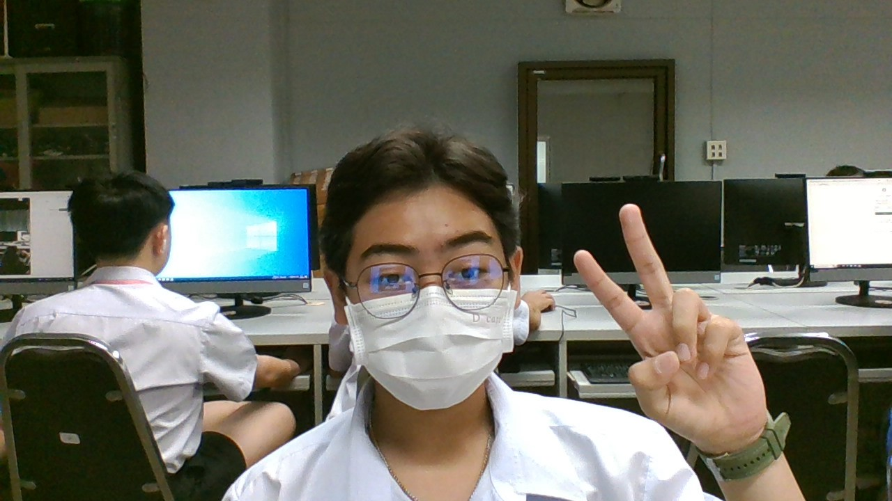

ครูในความทรงจำ..ที่ไม่ลืมเลือน 2568 🌷💐

นายนัชชา ยืนยงอนันต์: ขอบคุณที่สอนภาษาอังกฤษผมตอน ม.1 และดูแลผมที่แคนาดา
บทเพลงที่มอบให้ครู

นางสาววิยดา ไตรยวงค์: ครูเทคโนที่ใจดี จริงใจ ขอบคุณที่สอนผมทำเว็บที่แสนสนุก
บทเพลงที่มอบให้ครู

นางสาวประไพพรรณ ปรึกษาตน: ขอบคุณที่ไปเที่ยวและดูแลผมที่แคนาดา
บทเพลงที่มอบให้ครู

นางสาวศรันรัตน์ ไผ่พงศาวงศ์: ขอบคุณที่สอนคณิตศาสตร์ และแจกเกรด 4 ให้ผมครับ
บทเพลงที่มอบให้ครู

นายสุวิทย์ งามผักแว่น: ขอบคุณที่สอน IS ผม สอนทำรายงานทุกขึ้นตอนจนสำเร็จ ไปด้วยดีครับ
บทเพลงที่มอบให้ครู

ด.ช.กฤชณัท นุกิจ ม.208 เลขที่ 10